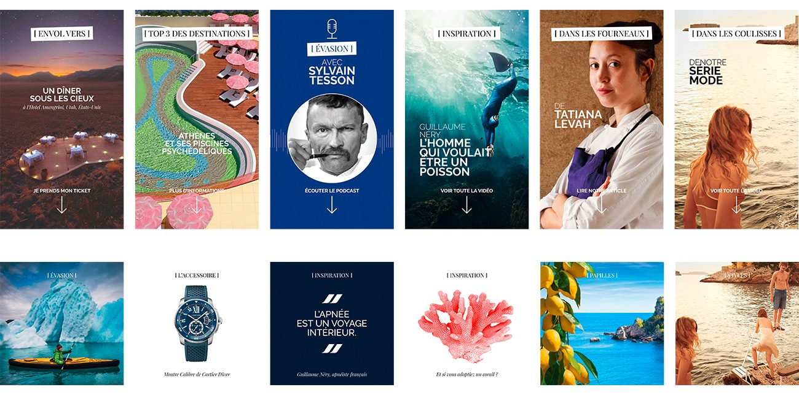
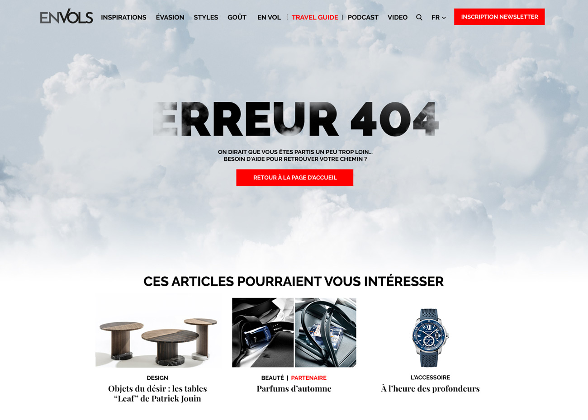
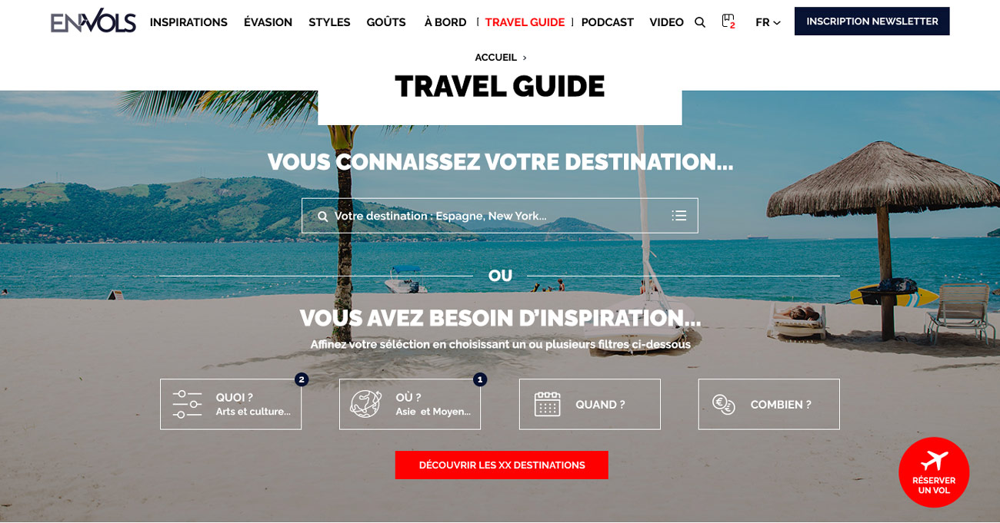
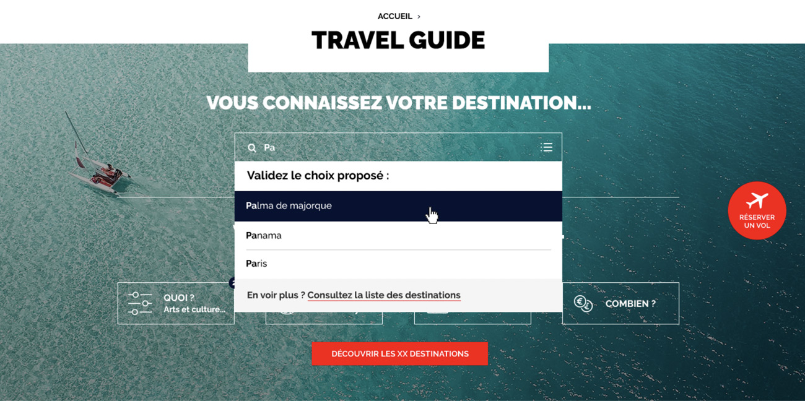
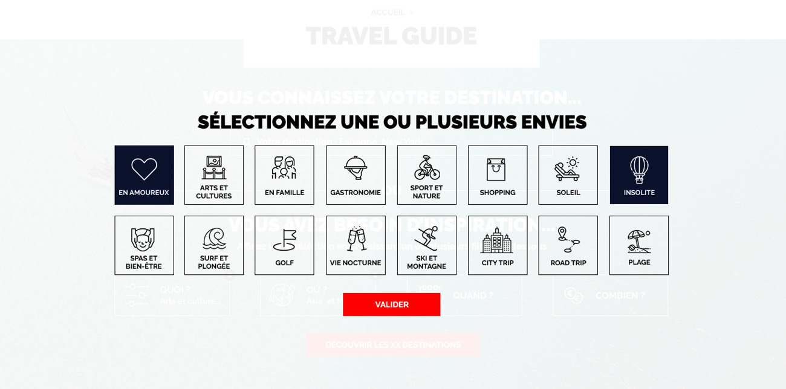
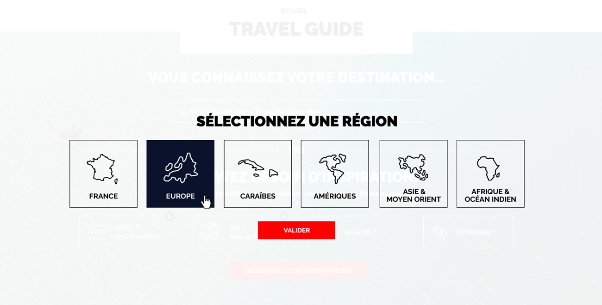
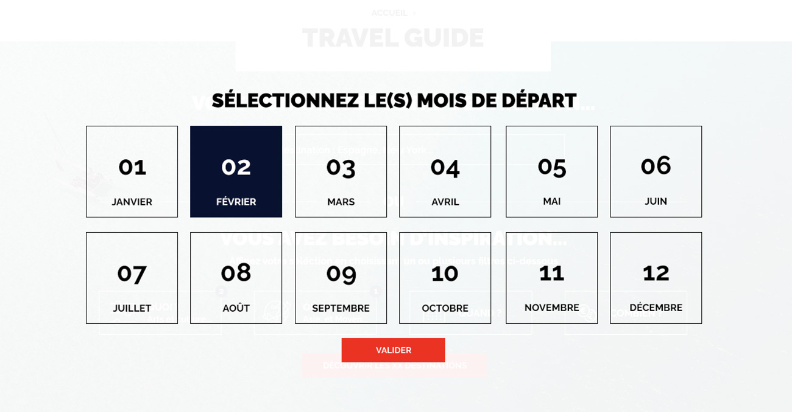

Concevoir l'architecture et l'interface digitale d'EnVols, le média d'évasion premium d'Air France, en structurant une densité massive de contenus tout en intégrant des leviers de monétisation (Ads) sans dégrader l'expérience de marque.
Air France
Product Designer Senior
(UX, UI, Éditorial,
branding digital)
Plateforme éditoriale B2C
Média premium international
Grand public & CSP+
International (FR/EN)
EnVols, une plateforme éditoriale internationale (FR/EN) visant une audience grand public et CSP+ habituée aux standards de luxe de la compagnie. Média de marque lancé début 2022, il place Air France en amont du voyage, dans la phase d'inspiration, au sein d'un écosystème : magazine bimestriel, site, Travel Guide, newsletters, podcasts et réseaux sociaux.
Transformer un volume d'informations massif (+100 guides de destinations, articles, podcasts, vidéos) en une plateforme lisible, fluide et engageante.
Le modèle économique du média exigeait une optimisation forte pour la conversion publicitaire (Ad conversion). Il fallait intégrer des emplacements fixes stricts sur la Home et au cœur des parcours de lecture, tout en préservant l'esthétique premium de la Maison.
Renvoyer vers la réservation : générer des redirections qualifiées vers le tunnel d'achat de billets Air France. Générer du revenu publicitaire : intégrer les emplacements imposés par la régie. Le tout sans donner le sentiment d'être vendu, et sans jamais rompre l'expérience éditoriale premium.
J'ai rejoint le projet à son tout début, avant que la plateforme existe : le cadrage a d'abord porté sur la marque, puis sur le produit.
Audits et benchmark de médias éditoriaux pour optimiser la structure des pages : placer les publicités et les blocs de réservation là où le rythme de lecture les rend visibles, sans interrompre le contenu.
Les structures ont été validées avec la régie publicitaire à l'aune de ses règles de visibilité : une part minimale de la surface de l'annonce visible pendant une durée minimale. La régie imposait aussi certains emplacements et formats. Le compromis se jouait sur la grille, pas sur la marque.
Cadrage du nouveau branding digital et des réseaux sociaux, validé par les équipes Air France. Puis cadrage de la plateforme, où j'ai proposé le Travel Guide comme entrée supplémentaire. Puis conception UX, puis UI de toutes les pages.
L'approche UX s'est concentrée sur la création d'une architecture modulaire capable d'absorber la richesse du catalogue, d'intégrer les impératifs commerciaux et de favoriser la découverte.
Conception d'une grille prévoyant nativement les espaces publicitaires. Au lieu de subir les encarts comme des éléments intrusifs, ils ont été calibrés dans le rythme de scroll (sur la Home et dans les pages de contenu) pour maximiser leur visibilité (taux de conversion) sans provoquer de rupture cognitive ou de frustration chez le lecteur.
Structuration de l'arborescence autour de logiques d'inspiration (entrées par destination) et de centres d'intérêt transversaux (food, culture, travel).
Conception de parcours adaptés à différents modes de consommation : une navigation orientée "snack content" pour un accès rapide sur mobile, couplée à une ergonomie favorisant le "slow reading" sur desktop pour maximiser le temps de session (et donc le temps d'exposition aux publicités).
Un accès direct à la réservation, volontairement en rupture avec la logique éditoriale (icône avion, fond contrasté, CTA rouge) : identifiable sans être vécu comme une interruption publicitaire.
Trois CTA circulaires reliés par un tracé pointillé évoquant un trajet. Celui de la réservation reprend la signature du widget de la page d'accueil.
Les formats IAB 300x600 et 970x250 sont intégrés dès la conception de la grille, placés en fin de section pour limiter la rupture de lecture.

L'interface devait refléter l'ADN luxe d'Air France tout en mettant en valeur le contenu et les espaces partenaires.
Traduction digitale des codes du magazine papier (150 000 exemplaires) via l'utilisation de grilles modulaires asymétriques. Ce choix structurel permet de valoriser les assets photographiques HD tout en maintenant une flexibilité d'intégration stricte pour l'équipe éditoriale (via le CMS).
Travail rigoureux sur la hiérarchie typographique et l'utilisation de l'espace blanc (White space). L'interface est délibérément épurée pour éviter le "sur-design", permettant ainsi aux contenus éditoriaux et aux encarts publicitaires de cohabiter de manière équilibrée.

La rubrique phare, dont les contenus sont produits par Michelin Editions, répond à deux usages : une recherche directe pour qui connaît déjà sa destination, et des filtres (Quoi / Où / Quand / Combien) pour qui cherche l'inspiration. L'état vide reste cohérent avec la marque plutôt que de rompre l'expérience.





Spécifications Figma remises aux équipes de développement, selon le processus habituel du projet.
Un design system et des gabarits responsives pour l'ensemble des pages, pensés pour que l'équipe éditoriale compose ses contenus dans le CMS sans casser la grille.
Des vidéos déroulent les parcours et les animations, pour partager l'intention d'interaction avec les équipes avant le développement.
Chiffres publics d'audience du média (étude de cas Media365, 2023). Ils mesurent la plateforme dans son ensemble, pas l'effet isolé du design : ils disent l'échelle sur laquelle l'architecture devait tenir.
La visibilité d'un emplacement publicitaire tient à sa place dans la lecture, pas à sa taille. Valider les structures avec la régie dès le cadrage évite les allers-retours.
Le widget de réservation et les CTA de fin d'article sont repérables sans être vécus comme de la publicité : ils se distinguent par leur forme et leur trajet, pas par leur insistance.
Le Travel Guide répond à deux usages : chercher une destination connue, ou s'inspirer. Une entrée supplémentaire a servi les deux sans alourdir la navigation éditoriale.